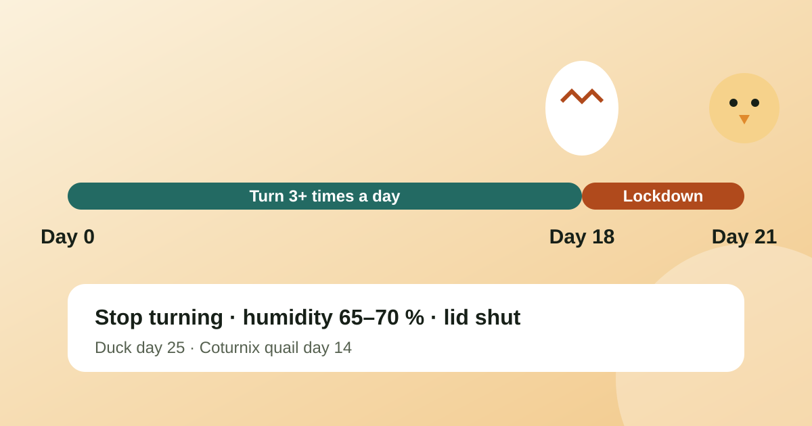

When to stop turning eggs: lockdown day for chicken, duck and quail

Stop turning eggs three days before they are due to hatch: day 18 for chickens, day 25 for ducks and day 14 for Coturnix quail. That is the start of lockdown. From then on you raise the humidity, keep the lid shut and let the chicks do the work. Opening the incubator now costs more hatches than any other mistake in the last stretch.
What lockdown means
Lockdown is the final phase of incubation. Three things change on the day it starts:
Turning stops. The chicks move into hatching position and need the eggs still.
Humidity goes up to about 65 to 70 percent for chickens, so the shell membranes stay soft enough for the chick to break out.
The lid stays closed until the hatch is over and the chicks are dry.
Lockdown day by species
Day 0 is the day the eggs go in. Lockdown is the day you stop turning and raise the humidity:
Species
Incubation days
Stop turning (lockdown)
Humidity at hatch
Chicken
21
Day 18
65–70 %
Coturnix quail
17
Day 14
65–70 %
Bobwhite quail
23
Day 20
65–70 %
Duck
28
Day 25
65–75 %
Muscovy duck
35
Day 32
65–75 %
Goose
30
Day 27
70–75 %
Turkey
28
Day 25
65–70 %
Every species on the chart follows the same rule of thumb: three days before the due date. The full list for 11 birds is on the incubation chart, and the hatch date calculator gives your own dates from the day you set the eggs.
How often to turn before lockdown
Turn at least three times a day, and always an odd number of times. An odd number means the egg spends alternate nights on alternate sides. Many keepers turn five times a day. An automatic turner does it for you, and a hand-turned tray works if you mark the eggs with an X on one side and an O on the other, so you can see which have been turned.
What to do on lockdown day
Candle one last time on day 14 for chickens, before lockdown, and remove clear or dead eggs. Do not candle after lockdown. See the candling guide.
Stop the turner. Remove the eggs from an automatic turner, or switch it off and lay the eggs on their sides on the incubator floor or a hatching tray. Check your incubator manual, because some models have a hatching mode.
Raise the humidity by filling the water channels or adding a wet sponge, aiming for 65 to 70 percent. See the incubator humidity guide.
Close the lid and leave it closed. Check temperature and humidity through the window.
What not to do during lockdown
Do not open the lid to look. The humidity drops quickly and takes a while to recover. A pipped egg that dries out can shrink-wrap the chick.
Do not help a chick out of the shell unless a vet or an experienced keeper tells you to. Chicks that are pulled out early bleed from the membranes.
Do not remove chicks one at a time. Wait until the hatch is over and they are dry and fluffy, which can take up to a day after the first pip.
Do not panic if hatching starts a day early or late. A half degree too warm or too cool shifts the hatch by roughly a day.
Remind yourself so you never miss the day
Lockdown day is easy to miss when a batch has been in for weeks, or when you have several batches at different stages. Hatch Day counts down to hatch day for 11 species and reminds you about turning, candling and lockdown, with daily temperature and humidity targets. It is free on Android and iPhone and works offline.
On day 18 of a 21-day incubation, which is three days before the expected hatch. Stop turning, raise the humidity to about 65 to 70 percent and keep the incubator closed until the chicks are dry.
What is lockdown in egg incubation?
Lockdown is the last stretch of incubation. You stop turning the eggs, raise the humidity and do not open the incubator, so the chicks can position themselves, pip and hatch.
When do I stop turning duck and quail eggs?
For ducks, on day 25 of 28. For Coturnix quail, on day 14 of 17. Other species are roughly three days before hatch; the incubation chart lists each one.
How often should I turn eggs before lockdown?
At least three times a day, and always an odd number so the egg sits on alternate sides overnight. An automatic turner does this for you.
Can I open the incubator during lockdown?
Avoid it. Opening the lid drops the humidity, which can dry the membrane around pipped eggs and trap the chick. Wait until the chicks are fluffy and dry.
Work out why your eggs did not hatch by looking at when they failed: clear at day 7, dead at day 10, or fully formed but dead in the shell. Each stage points to different fixes.
If you are paid weekly, every two weeks or twice a month, a monthly budget does not fit your income. Budget per pay period instead, and treat the extra paychecks as a bonus.
An expired passport is not found out at home, it is found out at the airport. Here is when to renew each document and how to get a reminder long before it matters.